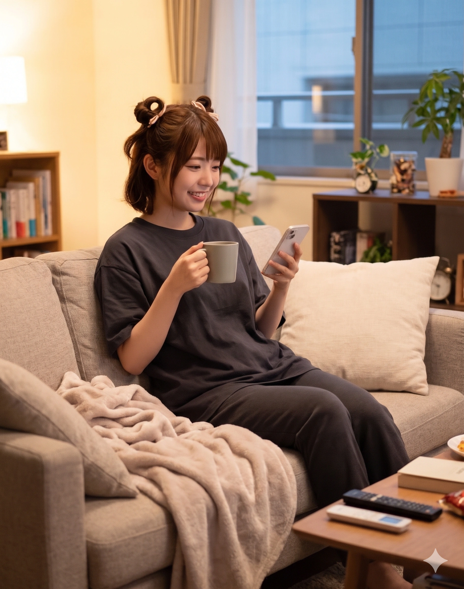

1. 개요
"우리의 작화에 브레이크란 없다! 마감까지 반짝반짝 두근두근(키라키라 도키도키)하게 달려보자구~!!" — 강숙미 (원화가 일동: "대표님 제발요... 이마에 별 스티커 붙이지 마시고 퇴근시켜 주세요...")
"하아?! 크아악~~~~! 실화냐~~~~~~~~! 야 강숙미 이 바보 자식아!! 누가 내 신성한 『유성당』 지하 창고랑 Roland 키보드에 멋대로 별 스티커 붙여놓으랬어?! 당장 공소장 날리기 전에 안 떼?!" — 이아리
"초, 초코 소라빵(チョココロネ) 마시써어... 산취제과의 초코 소라빵은 머리부터 먹어도, 꼬리부터 먹어도 정답이에요... 지복(至福)이네요~♪" — 우서림
"어서 오세요, 갓 구운 초코 소라빵이 방금 나왔답니다~ ...잠깐만요, 거기 빨간 조끼 입은 '이사야' 씨? 내 반죽 밀방망이로 '뚝스딱스' 맞고 사능동 앞바다에 가라앉고 싶어요?!" — 양사야
"오드아이의 옷쨩이야~♪ 어? 길 건너 확성기 든 윤재훈 선배님? 덕질은 죄가 아니지만 횡령이랑 무전취식은 죄랍니다. 지난달 동아리 회식비 15만 원은 언제 내실 건가요?" — 오다혜
효빈광역시 북구 고송동 애니메이션 클러스터와 사능동 베이커리 로드, 중수동 법조타운을 실질적으로 지배하고 있는 1990년대생 직장인·전문직 인디 록 밴드이자 효빈 서브컬처 세계관의 1세대 큰언니 어벤져스. 멤버 5인 전원이 일본의 미디어 믹스 프로젝트 《BanG Dream!》의 근본 주역 밴드인 Poppin'Party(포피파) 캐릭터들과 출생지 지명 한자(호산면=戸山, 화원면=花園, 우입면=牛込, 사능동=沙綾, 시곡면 유소리=市ヶ谷 有咲), 신체 스펙, 악기 장비, 심지어 담당 성우(아이미, 오오하시 아야카 등)와의 국경을 초월한 도플갱어 인연까지 200% 일치하는 완벽한 실사판 그룹이다.
원작의 포피파가 고등학교 동급생 5인방으로 구성된 것과 달리, 효빈시 현실 버전의 『포핀☆스타』는 1990년생 동갑내기 언니 3인방(강숙미·우서림·이아리, 만 36세) + 1994년생 동생(양사야, 만 32세) + 1997년생 막내(오다혜, 만 29세)라는 나이 차이를 뛰어넘은 크루로 결성되었다! 그러나 보컬 강숙미의 정신 연령이 워낙 해맑은 초등학생 수준이고 막내 오다혜가 4차원 천연 폭탄을 던지는 탓에, 합류 일주일 만에 4살 어린 양사야가 언니들의 도시락을 챙기고 사고를 수습하는 '실질적 맏언니(마망)'로 서열이 역전되었고, 그 옆에서 이아리 검사가 혼자 핏대를 세우며 전원에게 태클(츳코미)을 거는 대환장 가족 케미를 보여준다.
무엇보다 이 그룹이 무서운 점은 멤버 개개인의 사회적 권력과 본업 스펙이다. 직원 398명 규모 대한민국 최대 민간 2D 애니메이션 제작사 『스튜디오 효빈』 제3대 대표이사(강숙미), 효빈광역공소청 공판부 수석공소관·검사 겸 스튜디오 수석 법률고문(이아리), 스튜디오 효빈 사운드·영상편집 총괄 실장(우서림), 하루 초코 소라빵 3,000개가 팔리는 『산취제과』 총괄 파티시에 겸 상인회 청년회장(양사야), 그리고 효빈 서브컬처의 아버지 오다구 교수의 딸이자 완치율 99.9%의 수석 미술치료사 '덕후 화타'(오다혜)가 한 팀으로 뭉쳐 있어, 누군가 효빈시의 서브컬처나 철도, 골목상권을 건드리면 애니메이션 여론전·물리적 밀방망이·4차원 팩폭·법정 최고형 구형이 동시에 날아가는 무적의 카르텔을 형성하고 있다.[1]원작에서 카스미를 제외한 네 멤버(Saya, Tae, Arisa, Rimi)의 이름 첫 글자를 합치면 'STAR(별)'가 되듯, 효빈시에서도 사야(Saya)·타에/다혜(Tae)·아리(Ari)·림/서림(Rim)의 이니셜이 정확히 STAR를 완성하여 이아리가 밴드 이름을 『포핀☆스타(Poppin'Star)』로 작명했다!
2. 멤버 및 핵심 관계자 소개 (3D 현신)
원작에서는 카스미와 타에가 공부 꼴찌 바보 콤비로 묘사되지만, 현실의 강숙미는 효빈예고·효빈대 전체 수석, 오다혜는 서울대 출신 아버지 유전자로 중위권 이상을 거뜬히 사수한 능력자라는 반전 스펙을 자랑한다.
2.1. 별의 고동 5인방 (Core 5)

천주시 천성구 호산면(戶山面=토야마) 당뢰리 출생이자 대한민국 최대 2D 애니 제작사 『(주)스튜디오 효빈』 제3대 대표이사(CEO). 원작과 달리 학창 시절 공부와 작화를 모두 씹어먹은 전교 수석 출신이다(단, 일상 길 찾기와 물건 챙기기는 바보라 여동생 강수하가 케어함). 156cm·B85(D컵)의 출중한 베이글 몸매를 '뿔버섯 별머리'로 봉인하고 다니며, 철야 중인 원화가 이마에 홀로그램 별 스티커(개당 성과급 백만 원!)를 붙이고 다니는 고송동의 태양이다.

덕현군 화원면(花園面=하나조노) 화원리 돌발 출생이자 전 효빈도시공사 사장 오다구 교수의 막내딸. 완치율 99.9%의 수석 미술치료사('덕후 화타') 겸 네임드 코스어다. 164cm 장신에 햄버그·단팥죽으로 다져진 B85(꽉 찬 C~D컵) 모델 피지컬을 지녔다. 사능동 자택 마당에 대장 토끼 '옷쨩' 등 토끼 20마리가 사는 『오다혜 랜드(입국 비자 필요)』를 운영하며 평소엔 4차원 천연이지만, 가문의 원수인 윤대환·윤재훈 부자 앞에선 영하 50도의 시니컬 저승사자(시무라 타에 모드)로 돌변한다.

낭원군 우입면(牛込面=우시고메) 우입리 출생이자 스튜디오 효빈 사운드·영상편집 총괄 실장(음향감독). 한국 3월 학기제 덕분에 빠른 년생이 아닌 정통 90년생 동기다. 150cm·B76(A컵)의 세계관 최단신 슬렌더 요정 체형이라 만 36세에도 중학생으로 오해받는다(천애음의 유일한 마음의 위안!). 매일 아침 7시 『산취제과』에서 초코 소라빵 5개를 쓸어 담는 지박령이며, 폭죽 소리엔 "히얏!" 하고 놀라면서 피 튀기는 좀비 스플래터 호러물 앞에서는 눈이 광기로 빛나는 컴잘알 편집의 신이다.

북구 사능동(沙綾洞=사아야) 3호선 사능역 앞 빵지순례 성지 1호 『산취제과(山吹製菓=야마부키 베이커리)』의 총괄 수석 파티시에. 이름 한자부터가 양사야(梁沙綾)다! 90년생 언니들보다 4살 어리지만 정신 연령 높은 K-장녀 포용력으로 언니들을 먹이고 조련하는 실질적 마망이다. 157cm·B87(E컵)의 탄탄한 글래머 체형에 천성 왼손잡이, 참이슬 4병을 비우는 반전 주량을 지녔다. 자신의 신성한 이름을 더럽히는 극우 청년 '이사야'만 보면 2kg 떡갈나무 밀방망이를 들고 튀어나간다.

천주시 궁하구 시곡면(市谷面=이치가야) 유소리(有咲里=아리사) 출생이자 7호선 유성당역 앞 전당포 『유성당』 안주인. 고송여고·효빈대 공공학과·로스쿨을 모두 수석 졸업한 현직 효빈광역공소청 공판부 수석공소관(검사) 겸 스튜디오 효빈 명예 부대표다. 152cm 단신에 무려 B93(G컵, 4대 거유 사천왕!)의 폭력적 몸매를 법복으로 숨기고 다닌다. 낯선 이 앞에서는 요조숙녀지만 친구들이 기행을 벌이면 0.1초 만에 "크아악~! 실화냐 진짜!!"라며 급식체 태클을 꽂는 상식인이며, 검찰청을 해체시킨 내란수괴 윤석열을 벌레 보듯 경멸한다.
2.2. 가족 및 핵심 동맹 세력 (Extended Family & Allies)


3. 밴드 결성 및 반짝반짝 두근거리는 역사
유년 시절 시골 산골짜기에서 별의 고동을 느낀 소녀가 인간 자석처럼 친구들과 동생들을 끌어모아 효빈시 최고의 문화 제국을 일궈낸 서사다.
3.1. 전당포 『유성당』 지하 창고 무단침입 사건과 랜덤 스타
만 6살 시절 고향 천성군 호산면(戶山面) 당뢰리 뒷산에서 쏟아지는 별들을 보며 '별의 고동(Star Beat)'을 느꼈던 강숙미는, 효빈예술고등학교 만화애니메이션과 1학년이던 2006년 봄 운명적인 사고를 친다. 이웃 명문 고송여자고등학교에 전체 수석으로 입학해 놓고도 "신입생 선서 따위 귀찮아"라며 입학식 날부터 땡땡이를 치고 사능동3가 본가 전당포 『유성당』 지하 창고에 틀어박혀 분재만 가꾸던 은둔형 우등생 이아리의 영역에 침입한 것이다!
바닥에 붙은 별 모양 스티커를 따라 유성당 지하 창고까지 무작정 기어들어 온 뿔버섯 별머리 소녀 강숙미가 창고에 방치된 별 모양 기타 ESP 랜덤 스타(Random Star)를 만지작거리자, 아리는 "거기 서라 이 도둑년아!! 형법 제319조 주거침입 및 제329조 절도미수 현행범으로 당장 경찰에 넘겨주마!!"라고 일갈했다. 그러나 숙미는 해맑게 "우와아아!! 도둑 아니야~! 이 별 모양 기타가 너무 반짝반짝 두근거려서 그랬어!! 너 이름이 아리구나?! 오늘부터 우리 1일(친구)이다~!!"라며 막무가내로 창고를 아지트로 삼고 할머니의 달걀말이를 뺏어 먹기 시작했다.
결국 숙미가 데려간 라이브 하우스 『SPACE 효빈(감라나 외할머니 가게)』의 열기와 조건 없는 진심에 백기를 든 이아리는, 인터넷 옥션에 30만 엔에 올렸던 랜덤 스타 기타를 숙미에게 사실상 거저 넘겨주고 자신이 가장 아끼던 수령 50년짜리 소나무 분재 '토네가와(利根川)'를 눈물을 머금고 시곡면 분재 조합에 처분해 마련한 돈으로 Roland JUNO-Di 신디사이저를 구입하며 첫 번째 동료가 되었다.
3.2. 주먹밥 닌자 우서림과 사능동 『산취제과』 양사야의 트라우마 구원
두 번째로 합류한 것은 아리와 같은 고송여고 옆 반(2-A반 3번 이아리, 2-B반 3번 우서림) 동급생이던 우서림이었다. 서림이는 둘째 언니 우유리에게 물려받은 핑크색 ESP 바이퍼 베이스가 있었으나, 고1 입학 직후 하이엔드 앰프와 이펙터를 사느라 한 달 용돈과 참고서 값을 첫날에 탕진해 버려 고향 낭원군 우입면 햅쌀로 뭉친 '소고기 주먹밥'을 교실 뒤편에서 몰래 팔다 학생주임에게 걸리자 칠판 분필 가루로 연막탄을 터뜨리고 창문으로 탈출(원작 초기 구설정 고증!)했던 엉뚱한 소녀였다. 유성당 창고 라이브에 감화된 서림이가 베이시스트 겸 메인 작곡가로 합류하며 90년생 3인방이 뭉쳤다.
이후 세 사람이 효빈대를 졸업하고 스튜디오 효빈 입사 및 로스쿨에 진학한 2012년, 사능동 『산취제과』에 빵을 사러 갔던 23살의 강숙미가 가게 구석의 낡은 드럼 패드를 발견하고 당시 고3(1994년생, 4살 연하!)이던 빵집 장녀 양사야에게 밴드를 제안했다. 중학교 시절 첫 밴드 정기 공연 날 어머니가 과로로 쓰러져 사능동1가 효빈대병원에 실려 간 트라우마 때문에 스틱을 꺾었던 사야는 처음엔 거절했으나, 숙미·아리·서림이가 매일 산취제과로 출근해 앞치마를 두르고 빵 포장과 배달을 돕고 숙미가 직접 작사한 『STAR BEAT! ~별의 고동~』 데모를 보내주자, 어머니 최수연 여사의 "사야야, 네 다정함을 남한테만 쓰지 말고 너 자신에게도 좀 써. 가고 싶지? 그 아이들에게로!"라는 격려 속에 눈물을 터뜨리며 네 번째 멤버로 합류했다.
3.3. 7살 차이를 뛰어넘은 막내 오다혜 영입과 『Returns』 전력 질주
마지막 퍼즐은 90년생 언니들보다 무려 7살이나 어린 1997년생 막내 오다혜(닉네임 오타에)였다. 초등학생 시절 뮤직 스쿨에서 어머니(최영숙 여사)와 닮은 강사님을 보고 "어라? 우리 엄마가 언제부터 기타를 쳤지?"라고 천연스럽게 착각해 블루 스내퍼 기타를 독학으로 마스터했던 다혜는, HAF 행사장 거리 버스킹 도중 강숙미에게 발탁되었다. 다혜는 처음 숙미의 별 모양 랜덤 스타 기타를 보고 진지한 얼굴로 "우와... 변태(기행자) 기타다"라고 칭찬(?)해 숙미를 벙찌게 만들며 기초 코드 운지법을 가르쳐준 스승 겸 리드 기타리스트로 합류했다.
한 번은 다혜가 어린 시절 소꿉친구 언니(레이야 포지션)의 세션 밴드(RAS 포지션 — 꼬마 프로듀서 츄츄가 "Are you ready?"라고 묻자 다혜가 "노 레이디... 아이 엠 어 걸!"이라고 답한 전설의 밴드!) 서포트를 병행하느라 『포핀☆스타』 1주년 라이브에 늦을 위기에 처한 적이 있었다. 이펙터를 사느라 지갑에 택시비가 없던 다혜는 무대 의상 차림으로 고송동까지 두 발로 전력 질주해 뛰어왔으나 이미 공연이 끝난 뒤였고(이때 로젤리아 우희나 일행이 시간을 벌어주었다!), 자책감에 처음으로 눈물을 흘린 다혜가 사능동 공원 바닥에 나뭇가지로 가사를 적으며 작곡한 불후의 명곡 『Returns』를 들고 돌아와 양사야의 품에 안기며 5인조의 결속이 영원히 완성되었다.
3.4. 스튜디오 효빈 제3대 대표 취임과 대한민국 1위 서브컬처 제국 건설
2012년 효빈대 애니메이션산업학과를 수석 졸업하고 중소 제작사였던 『스튜디오 효빈』에 평사원(제2원화가)으로 입사한 강숙미는, 일본 하청 《BanG Dream!》 기타 코드 프레임 작화로 본토 감독들을 경악시킨 데 이어 2017년 시청 마스코트 『한바다』 단편 애니메이션을 극장판급 퀄리티로 뽑아내 회사를 효빈교통공사 IP 전담 스튜디오로 등극시켰다.
2021년 만 31세의 나이로 제3대 대표이사 겸 총괄 프로듀서에 추대된 강숙미는, 사운드·영상편집 총괄 실장으로 승진한 단짝 우서림(철도청 출신 숙미 부친 강태원 씨의 자문으로 전동차 구동음을 5.1채널로 믹싱!), 그리고 대표가 사기당할까 봐 무보수 겸직 허가를 받아 비상근 명예 부대표 겸 수석 법률고문을 맡아준 현직 검사 이아리와 함께 《달려라! 레일루미네》와 《철도부!》를 연타석 메가 히트시키며 직원 398명, 연 매출 수백억 원대의 대한민국 1위 애니메이션 제국을 완성했다.
4. 지명·철도 역세권 성골 매칭과 내부 대환장 문화
4.1. 호산면·화원면·우입면·사능동·시곡면 유소리 5대 행정구역 완벽 고증
효빈광역시 북구와 광역 생활권인 덕빈북도 천주시·낭원군, 덕빈남도 덕현군 일대에는 Poppin'Party 5인방의 성씨·이름과 한자가 100% 일치하는 성골 행정구역이 실존한다.
- 강숙미 (토야마 카스미 / 戸山 香澄): 덕빈북도 천주시 천성구 호산면(戶山面 = 토야마) 당뢰리 출생! (사비 기부를 보태 '호산 별빛 공원'을 조성했으며, 주황색 효빈 도시철도 4호선(#FF5522) 마스코트 다로나의 디자인 감수자다.)
- 오다혜 (하나조노 타에 / 花園 たえ): 만삭이던 모친 최영숙 여사가 봄나물을 캐러 친정인 덕빈남도 덕현군 화원면(花園面 = 하나조노) 화원리에 갔다가 화원신호장 옆에서 급작스럽게 출산하여 출생지가 화원면이 되었다! (파란색 1호선(#0077DD) 홍보대사 겸 2029년 승격 예정 화원역 명예 면장!)
- 우서림 (우시고메 리미 / 牛込 りみ): 덕빈북도 낭원군 우입면(牛込面 = 우시고메) 우입리 출생! (고향 사투리와 큰언니 우진주가 근무하는 오사카 간사이벤이 섞인 말투를 쓰며, 우입면 전체를 '초코 소라빵 특구'로 진화시켰다.)
- 양사야 (야마부키 사아야 / 山吹 沙綾): 효빈시 북구 사능동(沙綾洞 = 사아야) 출생 + 3호선 사능역 앞 『산취제과(山吹製菓 = 야마부키)』! (노란색 3호선(#FFCC11)과 분홍색 7호선 홍보대사!)
- 이아리 (이치가야 아리사 / 市ヶ谷 有咲): 덕빈북도 천주시 궁하구 시곡면(市谷面 = 이치가야) 유소리(有咲里 = 아리사) 출생 + 북구 사능동3가 7호선 유성당(流星堂)역 코앞 전당포 『유성당』 거주!
4.2. 『극장판 레일루미네』 마감 크런치와 이아리 부대표의 유성당 감금 작전
2025년 대히트작 《극장판 레일루미네 - 기적의 스탬프 랠리 -》 개봉 2주 전, 완벽주의가 도진 강숙미 대표가 "마지막 효빈역 야경 씬의 별빛이 덜 반짝거려! 내가 직접 원화 500장 다시 그릴 거야!"라며 대표이사실에서 4일 연속 밤을 새우다 코피를 쏟았다.
대표가 과로사할까 봐 비상사태를 선포한 부대표 이아리와 비서실장 겸 여동생 강수하는, 숙미가 제일 좋아하는 '감자튀김과 갓 지은 흰쌀밥 정식'으로 유인해 수면유도성 캐모마일 차(나소연 협찬)를 먹여 재운 뒤 숙미를 보쌈해서 유성당 지하 창고 침대에 24시간 동안 강제 감금(?)해 버렸다! 잠에서 깬 숙미가 "아리야아! 나 4호선 다로나 머리카락 칠해야 해! 문 열어줘!"라며 철문을 두드리자, 문밖에서 팔짱을 낀 아리가 얼굴을 붉히며 "시끄러워 이 바보 사장아!! 네가 쓰러지면 스튜디오 398명 월급은 누가 주는데?! 내가 레이아웃 검수 다 끝냈으니까 사야가 구워온 빵이나 먹고 푹 자!! ...흐, 흥! 걱정돼서 그런 거 아니거든?!"이라고 츤데레 처방을 내려 마스터링을 무사히 완수했다(숙미는 엔딩 크레딧 최상단에 [세상에서 제일가는 파트너, 츤데레 이아리에게 다이스키를 담아♡]를 박아 아리를 시사회장에서 혼절시켰다).
4.3. 유성당 지하 '하나조노 랜드' 불법 증축 미수와 초코 소라빵 머리·꼬리 대토론
이아리 검사의 혈압을 성층권으로 쏘아 올리는 유성당 지하 창고의 일상이다.
- 오다혜의 유성당 지하 '제2 하나조노 랜드' 불법 시공 미수 사건: 옛 라이브 하우스 『SPACE 효빈』이 문을 닫았을 때 충격에 빠진 오다혜가 시곡면 목재소에서 나무 판자와 철망을 트럭으로 주문해 유성당 마당에 하역하기 시작했다. 다혜가 목수 모자를 쓰고 해맑게 "아리 언니, SPACE가 사라졌으니까 우리 집 토끼 20마리랑 언니들이 영원히 함께 살 수 있는 하나조노 랜드를 아리 언니네 창고에 지을 거야. 언니는 종신 명예 토끼 총리로 임명할게"라고 선언하자, 퇴근길에 이를 본 이아리가 "크아악~~~~! 실화냐~~~~~~~~! 남의 집 지하실에 토끼 똥 냄새 진동하는 동물원을 왜 짓는 건데에에!! 무단점유로 고소한다 임마!!"라며 결사반대해 지점토 토끼 모형 20개만 선반에 영구 전시하는 것으로 타협했다.
- 초코 소라빵 '머리 vs 꼬리' 심야 대토론과 암모나이트 소라빵 몽(夢): 밤샘 작업 후 유성당 창고에서 강숙미("초코 가득한 머리부터 와앙!")와 이아리("꼬리부터 뜯어 찍어 먹어야 깔끔하지!")가 소라빵 먹는 법으로 싸우자, 소라빵 권위자 우서림이 경건하게 "앞에서 먹든 뒤에서 먹든 둘 다 정답(正解)이에요. 그것이 우주의 진리이자 지복이니까요..."라고 중재했다. 그날 밤 소라빵을 너무 많이 먹고 잠든 서림이는 꿈속에서 유성당 진열장의 암모나이트 화석이 소라빵으로 변하고 자기 몸통 전체가 거대 초코 소라빵이 되어 천모카에게 잡아먹힐 뻔하는 꿈(걸파☆피코 고증)을 꾸고 "히야아아악!! 난 먹으면 안 돼요오오!!"라고 잠꼬대 비명을 질러 아리를 기절초풍시켰다.
4.4. 제주도 워크숍 비행기 패닉 & 생곡동 폐터널 호러 성지순례 쌍끌이 혼절기
정치 깡패들 앞에서도 눈 하나 깜빡 안 하는 강숙미 대표와 이아리 검사가 나란히 쫄보가 되는 유이한 순간이 바로 '비행기'와 '호러(귀신·좀비)' 앞이다.
스튜디오 효빈 전 직원 제주도 워크숍 당시(극장판 『팝핀' 드림!』 괌 비행기 고증), 비행기가 이륙하자마자 안색이 하얗게 질린 강숙미가 양옆에 앉은 이아리와 우서림의 손을 뼈가 으스러져라 틀어쥐며 "히이이이익!! 하늘로 뜬다아아!! 나 살려줘어어!!"라며 벌벌 떨었다(와중에 서림이가 긴장 풀어준답시고 태블릿으로 좀비 스플래터 영화를 틀어줘서 기절 직전까지 갔다). 그러더니 제주공항에 착륙하자마자 무릎 주사 맞은 할머니처럼 1초 만에 쌩쌩하게 부활해 "와아~ 흑돼지 먹으러 출발~!!"이라며 뛰어다녀 직원들을 어이없게 만들었다.
또한 여름철 우서림이 전설적인 B급 호러 영화 《피의 곡괭이》 촬영지인 생곡동 '구 사능선 폐터널'을 발견하고 밤중에 멤버들을 강제 소집해 턱 밑에 손전등을 비추며 "후후후... 여기가 좀비 떼가 떨어지던 폐터널이에요! 강시랑 원령 분장 세트 가져왔으니 끝까지 들어가 봐요~♪"라고 광기를 뿜어내자, 겁이 없는 오다혜와 양사야만 따라 들어가고 강숙미와 이아리는 박쥐 한 마리가 날아가자마자 2중창 비명을 지르며 사능역까지 100m를 11초에 주파해 도망쳤다(참고로 평소엔 아리가 계단 2층만 올라가도 산소호흡기를 찾는 세계관 최악의 저질체력인데 공포 앞에서는 초인이 되었다!).
4.5. 양사야의 도촬(?) 사진관(카스아리 박제)과 고송공원 요조숙녀 내숭 가면 폭발
- 양사야의 초당 20연사 '카스아리 백합 현장' 영구 박제: 천모카의 권유로 카메라 취미에 빠진 양사야는 언니들의 은밀한 순간을 포착하는 파파라치 본능을 개화했다. 어느 날 유성당 창고에서 졸고 있는 이아리의 금발 트윈테일을 강숙미가 만지작거리며 "아리 머리 복슬복슬해서 토끼 같아~ 다이스키♡"라며 볼을 부비고, 잠결에 아리가 "으응... 숙미 바보... 가지 마..."라며 숙미 허리를 껴안는 순간, 계단 그늘에 잠복 중이던 양사야가 초당 20연사(뚝스딱스 속도!)로 셔터를 터뜨렸다! 아리가 얼굴이 용암처럼 터져 메모리 카드를 내놓으라고 절규했으나 사야는 온화한 눈웃음으로 "내 보물 사진첩 1번 페이지에 평생 간직할게♪"라며 절대 협박 카드로 활용 중이다.
- 고송공원 합동 벚꽃놀이 '요조숙녀 내숭 가면' 산산조각 사건: 타 밴드 지인들(이브, 코코로, 하구미 포지션)과의 첫 합동 꽃놀이에서 부잣집 요조숙녀로 보이고 싶었던 이아리가 "어머, 벚꽃이 참 아름답네요 호호호~"라며 내숭을 떨었으나, 10분 만에 강숙미가 벚나무 위로 기어 올라가 가지를 흔들고 오다혜가 지렁이를 잡아 토끼 밥으로 내밀며 천모카가 밤밥 찬합을 다 까먹자 이성의 끈이 끊어진 아리가 "크아악~~~~! 실화냐~~~~~~~~! 야 이 바보 천치 녀석들아!! 남의 앞에서 얌전히 좀 있으라고 했지!! 작작 좀 해 진짜아아악!!"이라고 걸걸한 본성 사자후를 토해내 공원을 정적에 빠뜨렸다(옆에서 이를 본 상식인 미사키 포지션 친구가 동병상련의 손수건을 건네며 영혼의 단짝이 되었다).
5. 전설적인 참교육 및 정치·상권 수호 일화 (대외 전투)
2006년 윤대환 전 시장의 스튜디오 재떨이 투척, 오다구 교수 부당 해임 및 고나미 피규어 파손, 사능동 전차 폐지 시도를 온몸으로 겪은 피해 당사자들이기에, 보수 정당(국민의힘)과 극우 빌런들에게는 단 1미리의 자비도 없는 철퇴를 내린다.
5.1. 오다혜('윤재훈 담당 일진')의 무전취식 15만 원 팩폭 & 2026 지선 당가동 공개 처형
평소 민들레 홀씨를 보며 웃는 4차원 천연 소녀 오다혜가 '효빈시 비공식 사이다 감사관'이자 '윤재훈 담당 일진'으로 추앙받게 된 전설의 참교육 연대기다.
대학 재학 시절 연합 봉사 동아리 회식 자리에 정식 부원도 아니면서 몰래 껴서 공짜 술을 얻어먹던 윤재훈(고판대 재학)이 다혜가 오다구 전 사장의 딸인 것을 알고 "야, 너네 아빠가 회사에서 짤리고 인형 놀이나 한다는 덕후 사장이라며? ㅋㅋㅋ 쪽팔리지도 않냐?"라고 시비를 걸었다. 순간 다혜의 눈에서 4차원 기운이 싹 사라지고 영하 50도의 시니컬 저승사자(시무라 타에 모드) 눈빛이 켜졌다!
오다혜 (1차 참교육 - 동아리 제명): "우리 아빠가 오타쿠인 게 뭐 어때서? 덕질은 죄가 아니야. 하지만 횡령이랑 뇌물수수, 비서관 살인미수는 죄란다, 재훈아. 너네 아빠 지금 교도소 콩밥은 입에 맞으신대? 그리고 너... 총무 언니한테 확인해 봤는데 우리 동아리 정회원 명부에 이름 없더라? 지난달 회식비랑 이번 달 회비, 도합 15만 원은 언제 낼 거니? 무전취식도 유전인가 봐?"
오다혜 (2022년 굿즈 공장 노역장 재회): (지선 9.99% 참패 후 빚더미에 앉아 굿즈 공장에서 한바다 인형 포장 알바를 하던 윤재훈 앞에 심리 상담 봉사자로 나타나) "어머, 선배님 드디어 적성에 맞는 일을 찾으셨네요! 우리 아빠가 만든 캐릭터 포장하느라 고생이 많으셔~ (윤재훈은 눈알을 거꾸로 붙여 3일 만에 짤림)"
오다혜 (2차 참교육 - 2026년 제9회 지선 당가동 유세장): (장동혁 대표의 낙하산 공천을 받아 출마한 윤재훈이 유세차에서 "밑바닥 공장 노동자로 서민의 눈물을 배웠다!"고 감성팔이를 하자 단팥죽 라떼를 빨며 군중을 뚫고 나가) "선배님!! 공장장님이 선배님 불량품만 내고 한바다 눈알 거꾸로 붙였다고 3일 만에 짤랐다던데 그새 정치판으로 도망치셨어요?! 저번에 당가동에서 장난감 총 들고 계엄사령관 놀이하다가 상인들한테 파리채로 쳐맞고 질질 짜셨다면서요?! 장동혁 대표님한테도 그렇게 사기 쳐서 공천받으셨어요?!"
이 3연속 영혼 도축으로 윤재훈은 길에서 오다혜와 마주치기만 해도 "히익!" 소리를 내며 전단지를 내팽개치고 반대편 골목으로 전력 질주하는 조건반사 트라우마에 걸렸다.
5.2. 전북대 중퇴 극우 청년 '이사야' 사능동 난입과 양사야의 밀방망이 뚝스딱스 심판
온화한 보살 양사야가 이름만 들어도 구역질을 하며 눈이 뒤집히는 불구대천의 원수가 바로 전북대 미술학과 중퇴 출신으로 윤재훈·이차야 일당에 빌붙어 반(反)서브컬처·극우 성희롱 시위를 벌이는 청년 '이사야'다. 자신의 고결한 본명인 '사야(沙綾)' 및 최애캐 '야마부키 사아야(Sāya)'와 발음이 똑같은 작자가 사능동을 돌아다니며 이름을 더럽히는 것을 평생의 수치로 여기기 때문이다.
2025년 봄, 이사야가 빨간 조끼를 입고 『산취제과』 앞에 나타나 확성기로 "나 애국청년 이사야가 경고한다! 내 이름이 아깝다! 왜색 빵집 물러가라!"며 행패를 부리자, 양사야가 가게에서 2kg짜리 반죽용 떡갈나무 밀방망이를 들고 튀어나왔고 강숙미가 ESP 랜덤 스타 기타와 마샬 앰프를 최대 출력으로 켜고 돌격했다!
숙미의 "키라키라 피드백 노이즈으으ㅡ!!"에 청각을 상실한 이사야에게 양사야가 "어디서 그 더러운 입으로 신성한 '사야'라는 이름을 팔아먹어?! 당장 개명 신청서 쓰기 전엔 사능동을 두 발로 못 나갈 줄 알아!! 뚝스딱스 맞고 반죽이 되고 싶어?!"라며 스파르타 드럼 비트로 확성기를 박살 냈고, 오다혜가 "제가 미술치료사인데 점토로 뇌 구조 좀 다시 빚어드릴까요?"라고 확인 사살을 날려 사능동 반경 1km를 이사야의 절대 사지(死地)로 만들어버렸다.
5.3. 이아리 검사의 '우신면 유리아 명예훼손 재판 3분 컷' & 내란수괴 윤석열 팬티 시위 극대노
효빈광역공소청 수석공소관(검사) 이아리는 법조인의 명예를 더럽힌 보수 정치인들과 내란수괴를 법리로 완벽하게 매장시켰다.
제22대 총선에서 참패한 판사 출신 적폐 우신면 전 의원이 자신의 8호선 백지화 공약을 풍자한 짤방에 앙심을 품고 스튜디오 효빈과 강숙미, 그리고 무려 2D 애니메이션 캐릭터인 '8호선 마스코트 유리아'를 피고인으로 지정해 명예훼손 고소장을 내자, 재판정에 등판한 이아리 검사는 "고소인 우신면은 판사 출신이라는 작자가 형사소송법상 당사자능력조차 없는 '2차원 디지털 작화 데이터(유리아)'를 자연인으로 착각해 고소했습니다. 이는 명백한 공소권 없음 및 법정 모독이며, 오히려 고소인이 차명으로 소유한 평당동 상가 지하 불법 성매매 업소 임대수익 은닉 혐의에 대한 인지수사 개시를 요청합니다!"라고 3분 컷 기각 및 역관광을 날려 우신면을 파멸시켰다(또한 중수동 효빈지방중대범죄수사청 '원더랜드 빌딩' 부지 알박기 투기꾼 A씨에게 징역 15년과 전 재산 추징을 구형해 꽂아 넣었다!).
특히 2024년 12.3 비상계엄 당시 검찰총장 출신 윤석열이 "효빈 8호선은 EMP 발신 기지다"라는 망상으로 장갑차를 보내고, 구치소 바닥에 사각팬티 바람으로 드러누워 "나 검사 27년 했어!"라며 추태를 부린 끝에 2026년 10월 검찰청 간판이 역사 속으로 완전 폐지(공소청 전환)되자, 아리는 분재 가위를 부러뜨릴 듯이 쥐고 "내가 저딴 내란수괴 주정뱅이 새끼랑 같은 '검사' 직함을 썼다는 게 내 평생의 수치다!! 크아악~~~~! 실화냐 진짜!!"라며 극대노했다.
5.4. 낭원군 우입면(인구 15만 시 승격 대작전) 초코 소라빵 자판기와 화원신호장 토끼 20마리
- 우서림 명예 면장의 낭원군 우입(牛込=우시고메)면 시 승격 대작전: 덕빈북도 낭원군이 시(市) 승격 기준인 인구 15만 명까지 단 136명을 남겨두었을 때, 우입면 출신 우서림 실장이 명예 면장으로 위촉되어 우입면사무소 단상에서 핑크색 바이퍼 베이스를 메고 "면사무소 민원실 번호표 뽑는 곳 옆에 초코 소라빵 전용 자판기가 설치되었어요! 전입 신고를 하시면 매달 소라빵 1박스를 평생 드린답니다! 초코 소라빵 마시써요...!"라고 홍보 영상(하늘에서 소라빵 비가 내리는 애프터이펙트 CG 직접 편집!)을 찍어 전국 뱅드리머들의 귀농·전입 러시와 우입면 국밥집·빵집 매출 500% 폭등을 일으켰다.
- 오다혜 명예 면장의 덕현군 화원(花園=하나조노)신호장 토끼 20마리 도열과 2kg 햄버그: 2029년 정식 보통역(화원역) 승격을 앞둔 화원신호장 공사장 펜스 앞에 오다혜가 "공사장 아저씨들이 외롭지 않게 토끼 친구들을 파견해야겠어"라며 직접 만든 실물 크기 토끼 인형 20마리를 일렬로 세워두자, 박효빈 시장과 덕현군수가 즉시 "오타에 님이 하사하신 성유물이다! 비가림막 천막을 씌워 24시간 보호하라!"고 지시해 농민들이 당근을 제물로 바치는 명소가 되었다. 또한 다혜가 자문한 『오타에 2kg 점보 햄버그 12분 완식 챌린지』에서는 강숙미가 넉다운된 사이 오다혜와 천모카가 10분 만에 2kg 햄버그를 클리어해 화원면 청년회 트랙터 기금을 털어먹었다.
5.5. 1호선 오타에 에어컨 블리자드, 3호선 안전 운행 뚝스딱스, 7호선 유성당역 츤데레 CS
- 1호선 '오타에 에어컨 블리자드' 안내방송 오버라이드 사건: 파란색 1호선(#0077DD) 타에 래핑 열차에서 만취 취객이 난동을 부려 FM 기관사 고나미(오다구 교수의 첫째 딸 캐릭터!)가 "규정은 피로 쓰였습니다!"라고 경고 방송을 켜는 순간, 시스템 버그로 오다혜의 나른한 방송인 "고기? 안 먹어. 왜냐면 난 채식주의자니까~ 실내 온도는 오타에의 기타 솔로처럼 시원한 18도야. 추울 땐 토끼들한테 둘러싸이면 따뜻해~♪"가 덮어씌워지며 영하권 에어컨 바람이 뿜어져 나와 취객이 "내, 내가 고기냐..."라고 중얼거리며 얌전히 하차한 무혈 진압 레전드다.
- 3호선 사능역 스크린도어 『안전 운행 뚝스딱스!』와 7호선 유성당역 츤데레 역무원: 양사야가 노란 3호선 제복 위에 앞치마를 두르고 드럼 스틱을 X자로 교차하며 "무리한 승하차는 안 돼요! 출입문 닫힐 땐 한 걸음 뒤로 뚝스딱스~♪" 캠페인 영상을 찍자 3호선 문 끼임 사고가 15% 감소했다(또한 사능시장 할머니들의 '대파 방위대'가 산취제과 줄에 새치기하던 악성 유튜버를 참교육했다). 한편 7호선 유성당역에서는 신입 역무원들의 어설픈 연기에 답답해진 이아리 검사가 직접 역무원 모자를 뺏어 쓰고 "하아? 산취제과 가는 길도 몰라? 눈은 장식으로 달고 다니냐 임마?! 코너 돌아 300m 직진하면 빵 냄새 진동하니까 코로 찾아가라고!"라고 찰진 본토 츤데레 시범을 보여 오타쿠 승객 50명에게 "포상입니다!!" 기립박수를 받고 수치사로 도망쳤다.
6. 성우 도플갱어 내한 대소동 & 타 세대·밴드와의 연대 (세계관 대통합)
6.1. 2026.03 성우 아이미 9번째 내한 팬미팅 '객석 강림 & 더블 아이미소' 대폭발
2017년 시청 마스코트 『한바다』 일본어판 더빙 당시 스튜디오 효빈 부스에서 처음 만나 3초 만에 부둥켜안고 고송동 삼겹살집에서 소맥을 말아 마셨던 성우 아이미(愛美)와 강숙미 대표! 그로부터 9년이 흐른 2026년 3월 21~23일 주간 아이미의 9번째 내한 팬미팅에서 대한민국 서브컬처계를 뒤집어 놓은 해프닝이 터졌다.
당시 강숙미 대표는 사장 직함을 숨기고 일반 티켓팅으로 예매해 친구들(이아리, 우서림, 양사야, 천모카)과 일반 객석 통로 자리에 몰래 앉아 주황색 킹블레이드를 흔들고 있었다(뒷자리에는 박효빈 시장이 앉아 있었다). 팬미팅 중반, 아이미가 마이크를 잡고 직접 무대 아래 객석 통로로 걸어 올라오는(객석 강림) 팬서비스를 시전하다가 통로 한가운데서 뿔버섯 별머리를 하고 땀을 뻘뻘 흘리는 강숙미와 눈이 정확히 마주쳤다!
아이미 (카스미·한바다 역): (걸음을 멈추고 눈이 휘둥그레져서 한국어로) "어...?! 잠깐만요!! 숙미 쨩(スッミちゃん)?! 스튜디오 효빈의 카스미 사장님이 왜 VIP 대기실이 아니라 일반 객석에 앉아 있는 거예요오오?!"
강숙미: (자리에서 벌떡 일어나 킹블레이드를 흔들며) "아이밍~!! 나 티켓팅 직접 성공해서 왔어!! 포피파! 피포파! 포피파파피포파~!!"
아이미: (빵 터져서 객석 난간 너머로 숙미를 와락 끌어안으며) "하하하하!! 역시 내 한국 도플갱어!! 아이미소(愛美スマイル) 보여줘~!!"
이아리: (바로 옆자리에서 외투 모자를 뒤집어쓰고 좌석 밑으로 기어들어 가며) "아악 쪽팔려!! 나 쟤 모르는 사람이에요오오!!"
무대 조명이 일제히 객석을 비추고 한일 양국의 카스미 본체가 객석 한복판에서 똑같은 표정으로 '더블 아이미소(양볼 손가락 찌르기)'를 작렬하자 2천여 명의 관객이 지붕이 날아갈 듯한 함성을 질렀고, 당일 한일 엑스(트위터) 실시간 트렌드 1위를 장식했다.
6.2. 성우 오오하시 아야카(핫시) 2025 HAF 합동 참교육 & 박효빈 시장 인형 피딩 액자 박제
양사야 역시 자신과 똑같은 1994년 9월생 동갑내기이자 왼손잡이 드러머인 성우 오오하시 아야카(핫시)가 내한할 때마다(2023 홍대 애니메이트 인형 전달회, 웨스트 브릿지, AGF, 2024 단독 콘서트, 2025 HAF, 2026 김치쿠라 페스 등) 박효빈 시장과 나란히 최전열에 개근해 핫시로부터 "오늘도 한국의 진짜 사아야 쨩이랑 빵 시장님이 와주셨네요~!"라는 공개 샤라웃을 받는다. 특히 2025년 HAF 『야마부키 사아야 대첩』 때 윤재훈이 난입하자 핫시가 유창한 한국어로 "당신들, 일본에서도 매장당하고 싶나요? 여기서도 더 매장당하고 싶으세요?"라고 일갈할 때 양사야가 옆에서 1m 바게트와 밀방망이를 들고 합동 포효를 작렬한 뒤, 그날 밤 산취제과 2층 테라스에서 핫시와 밤새 참이슬과 삼겹살을 궤짝째 마시며 주당 베프가 되었다.
또한 당시 박효빈 시장이 HAF를 지키기 위해 브리핑룸에서 자진 공개한 국가 기밀급 흑역사 사진(2023년 도쿄 이케부쿠로 빵집에서 사아야 네소베리 인형 입에 초코 소라빵을 물려주며 할아버지 미소를 짓고 있는 셀카) 원본을 양사야가 입수해, 가로 2m 초대형 금박 액자로 인화하여 산취제과 정중앙 벽면에 [우리 사능동의 영원한 VIP, 빵 시장님의 숭고한 사랑]이라며 영구 박제해 걸어두어 박 시장을 매번 홍당무로 만들고 있다.
6.3. 무지개 동호회와의 '신·구 카스미 배틀', 유채나 오븐 흑연 퇴출, 고노애·고하루 해독
- 강숙미 vs 나수미 '신·구 카스미 배틀' & 양사야의 김시연 권력형 협박 차단: 산취제과 알바생인 후배 나수미(나카스 카스미 본체, 04년생)와 강숙미(토야마 카스미 본체, 90년생)가 만나 "누가 효빈시의 진짜 카스밍인가!"를 두고 빵 만들기 대결을 벌였다가 숙미가 불가사리 괴물 빵을 연성해 수미가 수정해 구워내고 이마에 황금 별 스티커 5개를 하사받았다. 한편 수미의 빵 때문에 고소유가 7kg 살크업하자 눈이 뒤집힌 김시연이 찾아와 "아빠(김성민 의원)한테 말해서 알바 짤리게 할 거야 ^^"라며 협박했을 때, 사장님 양사야가 등판해 "국회의원 따님이라도 우리 에이스 수미는 못 자른단다~ 대신 시연 양이랑 소유 양 커플 저당 베이글 세트 싸줄게♪"라고 포근하게 제압해 천하의 김시연을 0.1초 만에 순한 양으로 만들었다.
- 유채나의 독일제 오븐 흑연 대참사와 보라색 점토 햄버그 긴급 구조: 주방의 재앙 유채나가 산취제과 양사야에게 베이킹 1일 수강을 받았다가 15분 만에 오븐 온도를 300도로 올리고 보라색 한약재를 투하해 독일제 데크 오븐에서 시커먼 흑연을 뿜어내자, 보살 사야가 생애 처음으로 식은땀을 흘리며 "세상엔 노력으로도 안 되는 영역이 있구나... 빵은 내가 평생 대신 구워줄게"라며 주방 영구 퇴출 판정을 내렸다(채나가 오다혜에게 공업용 클레이와 유황 냄새가 나는 보라색 햄버그를 먹이려 했을 때는 김시연이 "오다구 교수님 따님 입에 넣으면 철도 캐릭터 사용권 박탈이야"라며 채나의 팔목을 꺾어 구조했다!).
- 이아리 검사의 FM 노트 전수·학폭 교사 도축 & 오다혜의 고노애·고하루 해독: 이아리는 공공학과 14년 직속 후배 유채나에게 자신의 고교·대학 시절 『전설의 FM 행정·예산 바이블 노트 10권』을 물려주었고, 고노애·고하루 자매를 괴롭힌 내성중 부패 교사 이지훈을 특가법상 뇌물수수·아동학대처벌법으로 엮어 파면 및 실형에 처했다. 이어 노애의 실습 지도 선생님인 '덕후 화타' 오다혜가 점토 치료로 두 자매의 구원자 콤플렉스와 학폭 상처를 완벽히 해독해 주었다.
6.4. 미아 밴드와의 대동제 PV 무상 제작, 에도가와 악기점 의성어 튜닝, 눈물의 A컵 동맹
- 스튜디오 효빈의 효빈대 대동제 PV 무상 제작 & 『RiNG』 백스테이지 격려: 제98대 효빈대 총학생회장 고다솔이 별 모양 화강암 돌멩이를 건네자 '별의 고동'에 도파민이 폭발한 강숙미 대표가 1군 원화팀을 소집해 미아 밴드와 무지개 동호회가 베르데 홀 상공을 나는 극장판급 대동제 공식 PV를 무료 제작해 주었다(성우 전공 후배 오이슬을 졸업 후 전속 성우로 특채 도장까지 찍어줌!). 또한 『RiNG』 합동 라이브 대기실에서 떨고 있는 다솔이의 양손을 숙미가 감싸 안으며 "손을 잡으면 마음이 전해지거든! 다솔 쨩의 목소리는 진짜 별빛이야!"라고 격려해 무대를 성공시켰다.
- 에도가와 악기점 '의성어 튜닝'과 토끼·공벌레 대통합: 미아 밴드의 천애음이 악기점 자문 알바 중인 오다혜에게 이펙터 세팅을 묻자 다혜가 "처음엔 '슈와아아~' 하고 들어갔다가 후렴구에선 옷쨩이 점프하듯 '뾰오옹~! 콰아앙!' 하는 소리를 내면 돼"라고 답해 애음을 멘붕시켰으나, 중1 때 『SPACE 효빈』에서 다혜와 우유리 언니에게 기타를 배운 직속 제자 감라나는 단 한 번에 그 '뾰오옹' 하모닉스 음을 구현해 냈다! 또한 다솔이가 오다혜 랜드의 대장 토끼 옷쨩 머리 위에 공벌레 3마리를 올려놓자 다혜는 "토끼 기사가 헬멧을 쓴 것 같아! 공벌레도 입국 비자 발급해 주자!"라며 점토로 '토끼를 탄 공벌레 기사단' 20개를 빚어 호위무사 시인하를 어지럽게 만들었다(인하는 양사야에게 스틱 테이프와 멘탈 케어를 받고 성덕으로 감동했다).
- 우서림 × 천애음의 '눈물의 A컵 슬렌더 동맹' 결성: 주변이 온통 글래머(B93 이아리, B89 나소연, B88 시인하, B87 양사야, B85 강숙미·오다혜)인 세계관에서 홀로 A컵(B78)이라 울던 천애음이 150cm·B76(A컵)의 우서림 실장님을 영접하고 "드디어 진정한 슬렌더 요정 동지를 만났어요!!"라며 오열했다. 서림이는 애음에게 초코 소라빵을 나눠준 뒤 15년 구력의 괴물 같은 ESP 바이퍼 슬랩 속주를 시연해 경외심을 심어주었다.
6.5. 천모카 포인트 카드 대란, 『히카와 자매 화합 빵』, 유성당 암모나이트·분재 학술 토론
『애프터글로우』의 천모카(92년생)는 2살 언니인 강숙미·이아리·우서림과 반말로 맞먹고 양사야를 '빵 신님'으로 모시는 제6의 멤버급 단짝이다(사야에게 카메라 취미를 찾아준 장본인이며, 서림이와 창가에서 나란히 초코 소라빵을 갉아먹는 코로네 동지다). 또한 양사야는 천주 1호선(허사영)과 서해경전철(허아영) 개통 경쟁으로 싸우는 팬들을 위해 케이준 감자튀김과 민트초코 크림을 황매화 브리오슈로 감싼 『히카와 자매 화합 빵』을 개발해 대통합을 이뤄냈다.
한편 유성당 정원에서는 문주란(화도 당주), 이주시(관엽식물), 심나나(분재 대착각), 그리고 고다솔("소나무 분재 뿌리의 현무암 배치가 우주의 성운을 닮았어요...")이 모여 이아리 검사의 츤데레 회로를 고장 내고 밤안미츠 파티를 벌이는 훈훈한 풍경이 펼쳐진다.
7. 여담 (대환장 TMI 및 미공개 일화)
7.1. 오다혜의 '아빠(오다구 교수) 앞 고나미 1세대 코스프레' 정체 은폐 사건
2023년 HAF 행사장에서 있었던 희대의 부녀 해프닝이다. 이날 오다혜는 아버지 오다구 교수가 2003년 직접 기획했던 1호선 마스코트 고나미 1세대 레진 피규어 버전을 완벽하게 코스프레하고 행사장을 누볐다. 마침 벙거지 모자와 마스크로 변장하고 굿즈 줄에 서 있던 오다구 교수가 그 퀄리티에 감탄하며 다가가 "학생, 고나미 1세대 버전 고증이 아주 훌륭하구먼. 내가 기획자인데 사진 한 장 찍어도 되겠나?"라고 정중히 요청했다! 아버지의 목소리를 단박에 알아챈 다혜는 속으로 경악했으나 정체를 들키지 않으려고 꾹 참고 포즈를 취해줬다.
그날 저녁, 집에 돌아온 오다구 교수가 아내 최영숙 여사에게 "오늘 행사장에서 역대급 고나미 코스어를 봤어!"라며 사진을 자랑스레 내밀자, 최 여사가 남편의 등짝을 후려치며 "이 양반아, 이거 우리 막내딸(다혜)이잖아!!"라고 소리쳐 오다구 교수가 충격으로 사흘간 딸의 얼굴을 똑바로 쳐다보지 못했다고 한다.
7.2. 미모 봉인구(별머리 & 금발 트윈테일) 해제 시의 파괴력과 별 모양 칭찬 스티커
강숙미의 '양갈래 뿔버섯 별머리'와 이아리의 '금발 양갈래 트윈테일'은 세계관 양대 미모 봉인구로 꼽힌다. 비 오는 날이나 사우나 후 머리를 차분하게 풀어 내린 생머리 상태의 강숙미(156cm, B85 D컵)와 안경 쓴 생머리의 이아리(152cm, B93 G컵)는 극강의 청순·성숙미를 뿜어내어 신입 사원들이 연예인인 줄 알고 번호를 물어봤다가 뒤통수를 맞곤 한다.
또한 스튜디오 효빈 원화가들 사이에서 강숙미 대표가 철야 도중 이마나 모니터에 붙여주는 '홀로그램 별 모양 스티커'는 당일 퇴근 취소(작화 지옥 당첨)를 뜻하는 공포의 상징이지만, 다음 달 급여일에 별 스티커 1개당 특별 성과급이 백만 원 단위로 꽂히기 때문에 월말만 되면 전 직원이 스스로 이마를 내밀며 별 스티커를 붙여달라고 조르는 진풍경이 벌어진다(이아리 검사의 모든 Roland 키보드와 공소청 집무실 모니터 모서리에도 숙미가 붙인 별 스티커가 하나씩 붙어 있는데, 아리는 "접착제가 세서 안 떨어지는 것뿐이거든?!"이라며 평생 안 떼고 있다).
7.3. 전교 수석 검사의 '실용 영어 회화 울렁증'과 초코 소라빵 실종 모의재판
수능 영어와 로스쿨 법학영어 독해는 만점을 찍은 초엘리트 이아리 검사에게도 치명적인 약점이 있으니, 바로 외국인과 얼굴을 맞대고 하는 '실용 영어 스피킹(회화) 울렁증'(극장판 『팝핀' 드림!』 고증)이다! 스튜디오 효빈의 필리핀계 원화가 카트리나 산토스의 가족이 방문했을 때 숙미가 통역을 떠밀자, 아리가 홍당무가 되어 "어... 아, 아이 엠 어 프, 프로세큐터... 두 유 라이크 본사이(Bonsai)...?"라며 버벅대다 유성당 창고로 도망쳤다(정작 카트리나는 한국어를 아리보다 더 잘한다).
반면 『RiNG 효빈점』 대기실 냉장고에서 우서림의 한정판 다크초코 소라빵 5개가 증발해 『제1회 초코 소라빵 특별 재판』이 열렸을 때는, 박스 판사봉을 든 강숙미 재판장과 이아리 검사의 추궁 끝에 "나는 3개밖에 안 먹었단 말이야~"라고 자백한 주범 천모카와, 소파 밑에서 입가에 초콜릿을 묻힌 채 기어 나와 시인하의 가죽 재킷에 입을 쓱 닦으며 "모카 언니가 같이 먹재서 먹었어"라고 실토한 공범 감라나를 일망타진하고 양사야의 '특대형 1m 초코 소라빵'을 다 같이 나눠 먹었다.
7.4. 3월 학기제의 기적(정통 90년생 우서림)과 마경의 남동생 강태성 참교육
원작(일본 4월 학기제)에서 3월 23일생인 우시고메 리미는 학년 끝자락인 '빠른 생일'이라 막내 취급을 받지만, 3월 학기제를 쓰는 대한민국에서는 1990년 3월 23일생인 우서림이 빠른 년생으로 끌려가지 않고 오히려 1990년생 학년의 가장 첫 달에 태어난 정통 90년생 맏언니(?)로 입학하여 4월생 강숙미, 10월생 이아리와 한 치의 어긋남 없는 완벽한 동갑 동기가 되는 학제상의 기적이 완성되었다!
한편 원작 카스미에게는 없는 현실 오리지널 가족인 강숙미·강수하 자매의 남동생 강태성(95년생, 반백수 유튜버)은 서른이 넘도록 철이 안 들어 큰누나 숙미의 한정판 랜덤 스타 피크를 훔쳐 가거나 냉장고의 감자튀김 빵을 몰래 먹어치우는데, 그럴 때마다 천사 사장님 강숙미와 비서실장 강수하가 합심하여 양손으로 남동생의 등짝을 타악기처럼 연타하는 K-남매 참교육을 시전한다(미아 밴드의 감라나, 애프터글로우의 천모카, 모르포니카의 마서령·심나나와 만나면 '말 안 듣는 동생 둔 언니·누나들의 고충'으로 대동단결한다).
8. 각주
- [1] 원작에서 카스미를 제외한 네 멤버(Saya, Tae, Arisa, Rimi)의 이름 첫 글자를 합치면 'STAR(별)'가 되듯, 효빈시에서도 사야(Saya)·타에/다혜(Tae)·아리(Ari)·림/서림(Rim)의 이니셜이 정확히 STAR를 완성하여 이아리 검사가 밴드 이름을 『포핀☆스타(Poppin'Star)』로 직접 작명했다!